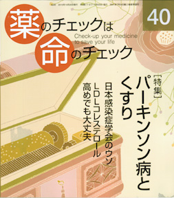

No.40 [特集] パーキンソン病とくすり 2010年10月 発行
日本感染症学会のウソ LDLコレステロール高めでも大丈夫

映画好きなら、若年性パーキンソン病になったマイケル・J・フォックスが「マイケル・J・フォックス基金」を
立ち上げて病気の原因究明や治療のために活動していることをご存じかも知れません。あるいは、
ボクシングの元ヘビー級チャンピオンで、そのファイティングを「蝶のように舞い、蜂のように刺す」と形容された
モハメド・アリがパーキンソン病に罹った身をおして、1996年7月19日のアトランタオリンピック開会式で聖火を掲げた姿を
ご覧になったかもしれません。
これら著名人の様子から、パーキンソン病とは体の動きが不自由になる病気のようだ、ということはなんとなく
わかると思います。
今回の特集では、まずパーキンソン病について（4頁〜）、
その次にパーキンソン病の治療（17頁〜）、そして
原因（33頁〜）、の順序でくわしく解説していきます。
もくじ
特集 高齢者とくすり（４）パーキンソン病とくすり
■ パーキンソン病とは 編集部
■ パーキンソン病の治療 別府宏圀
■ パーキンソン病の原因 浜 六郎
■ 薬剤が原因で起きる錐体外路症状 浜 六郎
■ パーキンソン病による排尿障害 木元康介
■ がん末期に薬でパーキンソン症状が出た 坂口啓子
降圧剤を評価する（39号の続き） 浜 六郎
あなたの降圧剤はどれ？―薬剤評価リスト
連載
■ リレーエッセー 老人にできること 高木知道
■ 新・市民の視点 当事者運動にも普通のマネジメントを 石井政之
■ 行ってきました がん検診と幸せ 木元康介
■ みんなのやさしい生命倫理(40) 生老病死(10) 谷田憲俊
その他
■ 医師国家試験に挑戦しよう！
■ コーヒー無礼区
■ 次号予告
■ 海外情報 日本感染症学会の虚偽の見解に対して海外から批判
■ 質問箱（１）社会人の化粧と紫外線対策は？
（２）健診のコレステロール値の見方は？
■ 読者の声
■ 書評
■ 医師国家試験の解答
■ 用語解説（医学、統計学などの用語を解説しています）
■ バックナンバー一覧
■ 書籍申込用紙
■ 編集後記/奥付